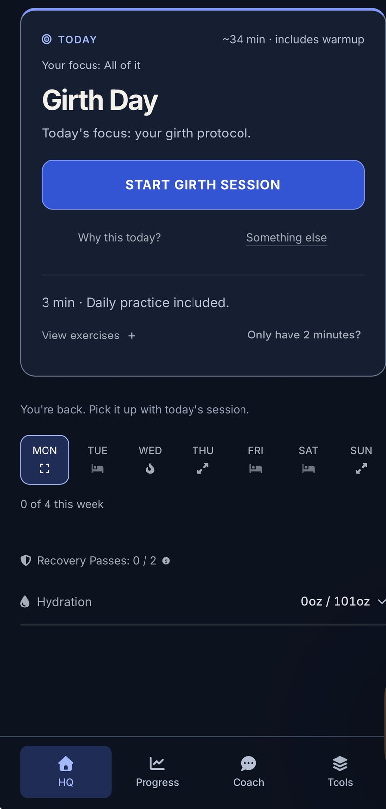
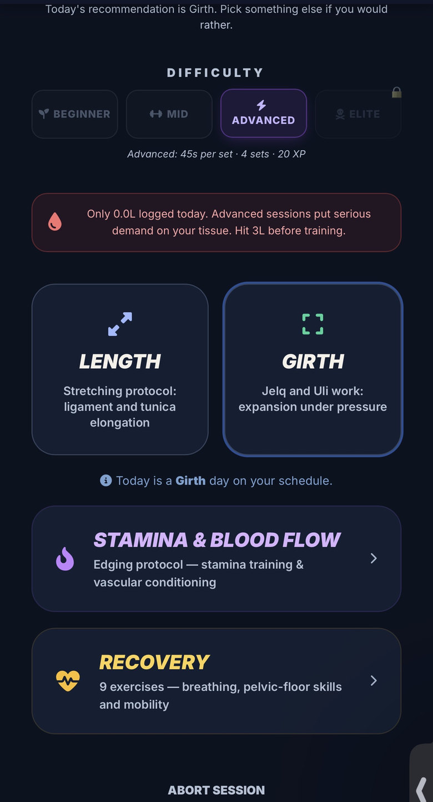
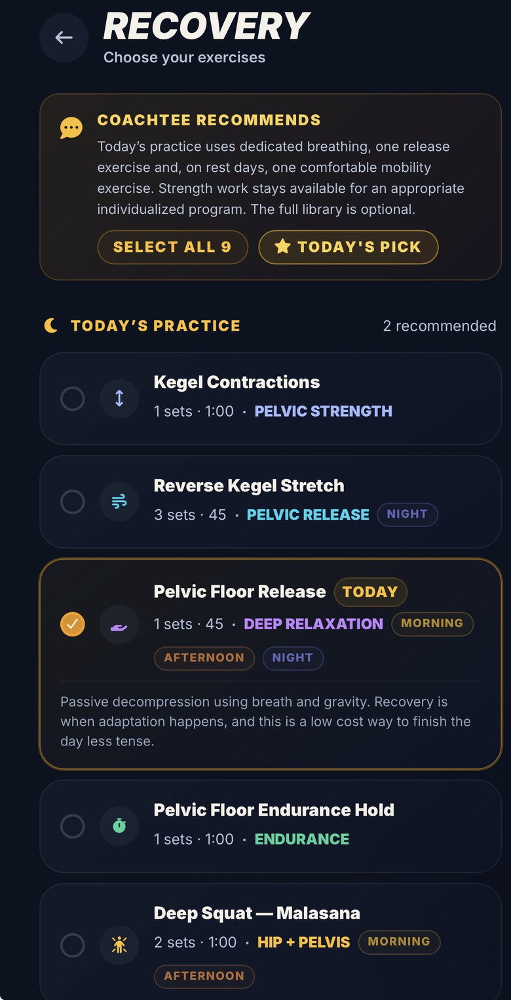
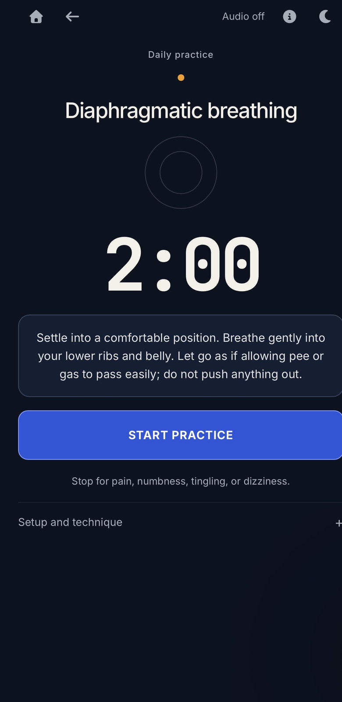

Start where you are.
Pick a goal instead of guessing which routine belongs in your day.
You can have years of experience and still struggle with erection consistency, finishing sooner than you want, or knowing where to start with length and girth. More experience isn't automatically a plan.
The Blueprint gives you a place to start and a way to practice. Choose your goal, follow guided sessions for sexual performance and optional length or girth training, make room for recovery, and track your own progress.
Five private assessment questions · About two minutes · No account required.
The app is optional: $99 once · No subscription · Future app updates included.
Lasting longer? More reliable erections? Better overall performance? Exploring length or girth? Start with the one that matters most to you.
Every goal has free information to explore before you decide whether you want the app.
Ejaculation timing, arousal awareness, and what actually contributes to it.
Consistency, circulation, sleep, and the medical factors worth ruling out.
Conditioning, breathing, recovery, and the habits underneath all of it.
What men in enhancement communities report, and what their own logs show.
Not sure where to begin? Take the free assessment: five private questions, about two minutes. Or check today's free tip.
Persistent erection or ejaculation difficulties can have medical causes. Education helps you ask better questions; it cannot replace evaluation.
A random exercise can give you something to do. A system helps you understand what to focus on today, when to recover, and what to pay attention to over time. That's what The Blueprint is built to organize.
Pick a goal instead of guessing which routine belongs in your day.
Use guided practice, daily recommendations and recovery options you can actually follow.
Record your sessions, erection quality and measurements. Review what you're noticing instead of relying on memory.
Training length or girth? Those sessions are optional. Progress and responses vary, so the app includes recovery guidance and warning signs alongside the exercises.
Blood flow, pelvic floor work, stamina, optional length and girth routines, and tracking all have a place. Explore the detail when you're ready.
Daily guidance on the habits that actually support erection quality. Hydration, movement, sleep, warm-ups, and the foods and supplements that help. You start paying attention to what changes how hard and full you feel, instead of assuming your body should perform the same every day.
A strong pelvic floor is not the same thing as a constantly clenched one. A lot of men spend years tightening and never learn how to release. You get both sides: when to contract, when to relax, how to do reverse kegels, and how to breathe with the pelvic floor instead of fighting it.
Premature ejaculation is not solved by telling yourself not to finish. You need something to practice. You get structured edging sessions where you learn to recognize your arousal before you cross the line, then slow it down, change rhythm, breathe through it, and release pelvic tension. Stop letting ejaculation happen to you. Learn to control when it happens.
A structured approach instead of forums full of random routines. Proper warm-up, safe erection levels for training, directional stretching, progression, recovery, consistent measuring, and the warning signs that tell you to back off. No pulling as hard as possible. No pain equals progress. Tension is training. Pain is a warning.
Thickness work uses a completely different stimulus than length work. You get controlled expansion work, plus how to manage pressure, erection level, frequency, recovery, and progression. More force is not automatically more growth. Sometimes it is just more risk.
Erection quality, morning erections, length, girth, sessions, edging progress, hydration, pelvic floor work. Over time you see the patterns. Maybe your EQ drops when you sleep badly. Maybe you are training too often. Maybe your control improved before your measurements did. Data beats guessing.
Erection firmness, sensation, arousal awareness and recovery still matter when your goal is length or girth. Training one area shouldn't mean ignoring the others.
The Blueprint brings those goals together. It doesn't promise a particular measurement or replace medical care.
These are screenshots of the current Blueprint app supplied by Coach Tee. See the daily recommendation, training choices, recovery guidance and a guided practice before deciding if the app is right for you.
Four screens. Swipe sideways to explore, or focus the gallery and use the arrow keys.




Current app screens. Your recommendations, settings and progress will depend on your account and activity.
Shared with permission, in their own words. Some men were combining manuals with other methods. These experiences are personal, not results everyone can expect.
“I’ve been doing your manual routines and love how easy and convenient it is. In 2 months with occasional pumping, I have nearly gained 1cm in length.”
“I gained my first .5 using the length manuals. I like doing them in the shower and immediately after, while the tissue is pliable…”
“I’ve gained both length and thickness since I’ve been using your app man, and my lady noticed before I did!”
These are individual results. They are not an average and they are not a promise. Bodies are different, some of these men were doing other things at the same time, and no honest version of this page can tell you what yours will be.
That question is one of the biggest reasons I built this.
Across communities like Thunder's Place and r/gettingbigger, men share progress logs about manual stretching, jelqing, pumping and traction. Some report modest changes. Others claim an inch or more after months or years of training. I've seen changes in my own length and girth too, which is why those stories matter to me.
Ever wondered what these guys actually did, how long they trained or how they tracked their measurements? Explore their original progress reports. They're personal experiences, not a promise of what anyone else will gain.
What I can give you is the structured approach I wish I had when I started.
If you're curious to explore, you deserve an organized way to train, measure and monitor your progress.
It is an app on your phone. It does not post anything anywhere. There is no community to join and no group chat where men introduce themselves.
No appointment. No waiting room. No conversation with anybody who knows your name.
You do the work in your own bathroom, on your own schedule, and the only person who ever sees your numbers is you.
The one thing it asks for is an honest log. That is the only place where lying to it costs you anything real.
You do not need another folder full of screenshots, 37 Reddit tabs open, or five different guys giving you five completely different routines. You need somewhere to train, track, learn, and adjust.
No subscription or recurring charges. Future app updates included at no extra cost.
Pay here with Apple Pay, Google Pay or a card. Card charges generally appear as COACH TEE on statements; banks may format the name differently.
Checkout could not start, and you have not been charged. Try again, or email Therealcoachtee@gmail.com and a real person will take your order by hand. Include the message above if there is one.
Trouble getting in, or it is not what you expected? Email Therealcoachtee@gmail.com and a real person answers you.